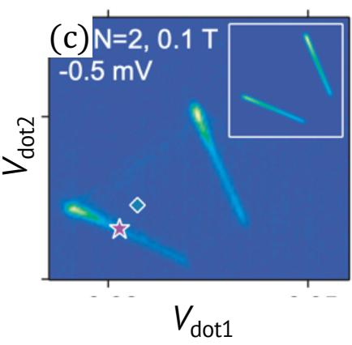
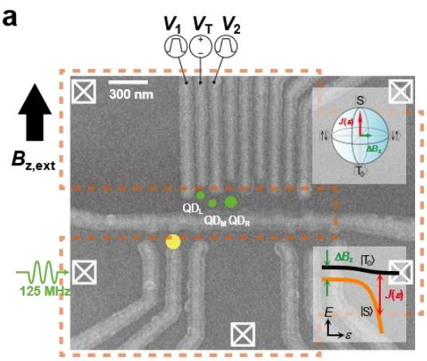
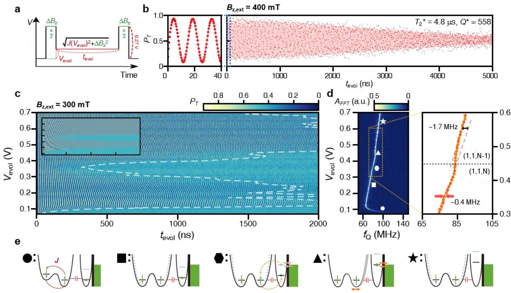

物理图像与编码
在串联双量子点的 电荷区，左右两点各囚禁一个电子。两个自旋 合成一个单态和三个三重态：
在弱耦合、零磁场下这四个态近似简并。沿电荷稳定图中 – 反交叉线改变失谐 （两电荷态的能量差），进入 区域后两个电子占据同一点：基态是单态 ，而三重态 因泡利不相容原理要求一个电子占据激发轨道，能量高出 （GaAs 中一般为数百 eV，典型值约 eV），在操控与读出中不参与。施加外磁场 后 发生塞曼劈裂 ，在 处 与 交叉；交叉点一侧 与 构成有效二能级系统，即单态–三重态（–）量子比特。选择两个零磁量子数态编码的好处是：均匀磁场对二者产生的塞曼相移相同，比特对全局磁场涨落一阶免疫，剩下的退相干主要来自两点磁场的差值。

泡利自旋阻塞下正/反偏压偏压三角形中电子跃迁通道与能级示意图
这一编码方案的吸引力在于全电控： 轴旋转只需栅压脉冲调节 ，无需微波磁场，绕开了单自旋方案中金属条带加热与寻址的难题。方案由 Levy 于 2002 年提出，2005 年 Petta 等在 GaAs 双量子点中首次演示 – 相干交换振荡；此后微磁体梯度方案被引入硅基器件（Eriksson 组），两个 – 比特间的纠缠也由 Yacoby 组实现。在比特编码的家族中，它与单自旋量子比特（一个电子）、交换型三电子编码构成按电子数递增的序列。
理论模型
– 比特的理论描述分两层：先由 – 电荷反交叉的两能级模型给出可调交换能 ，再把超精细核场作为准静态微扰加入，得到含两条控制轴的有效二能级哈密顿量。
交换能：从电荷反交叉到
点间隧穿保持自旋守恒，因此只有自旋相同的态相互耦合： 与 耦合，而 不与 耦合。在基 下
其中 表征隧穿耦合强度。本征能量为 。（能量取为零点）与较低单态本征态的能量差定义为交换相互作用能
在负大失谐极限 ，即交换能被指数式地压向零。这与 Hubbard 图像一致：在充电能 远大于失谐与塞曼差时，， 为隧穿耦合。失谐和势垒栅压都能调节 ，但二者对电荷噪声的敏感度不同。
核磁场与有效二能级哈密顿量
在 GaAs 中，每个电子通过超精细相互作用与约 个核自旋耦合。核自旋动力学远慢于电子，可采用准静态近似，把核自旋库等效为冻结的有效磁场（奥弗豪泽场）。记两点电子感受到的平均场与差场分别为
总哈密顿量为
以 为基展开（各耦合项符号依赖于基矢相位约定）：
可见：平均场的 分量劈裂 ；两点核场差的 分量 耦合 与 ；差场的横向分量耦合 与 。当 时 被塞曼能移出， 子空间的有效哈密顿量为
这就是 – 比特的工作哈密顿量：对角元差 提供 轴，非对角元 提供 轴。类似地，在 – 交叉点附近，横向核场差以混合角 加权后驱动 ，把交叉变成反交叉。
操控：交换轴与梯度轴
在布洛赫球上 、 分居南北极， 时的本征态 、 定义 轴。
轴（交换轴）：把系统脉冲到 的失谐位置，态矢量以频率 绕 轴进动，积累 与 间的相对相位。由于初始化只能制备 （北极），而交换振荡的可见度在态处于赤道时最大，标准流程借助绝热跟随把初态搬到赤道：在 区初始化 后，用快速绝热脉冲越过 – 交叉进入 区，再缓慢斜坡关闭 ，系统跟随瞬时本征态演化为核场本征态 或 （取决于即时核场）；随后非绝热地打开 进动时间 ，最后用反向绝热跟随把 轴映射回 轴读出。单态概率随 与 呈现清晰的振荡条纹，增大点间隧穿耦合可提高振荡频率。
轴（梯度轴）：驱动到 的大失谐处， 使 与 互相转化。困难在于 GaAs 中核场差是随机的：热涨落使 旋转的角度逐次实验抖动，退相干时间 只有约 ns，与平均旋转周期同量级。可靠的 轴操作需要稳定且足够大的磁场梯度，两条主流路线是在量子点旁集成微磁体，或通过动态核自旋极化（dynamic nuclear polarization，DNP）泵浦出稳定的核场梯度。两条不共线轴组合即可合成普适单比特门。
交换振荡在实验上表现为 QPC 微分电导随失谐 与演化时间 的二维条纹图：固定失谐做线切即得阻尼正弦的振荡曲线，频率给出 ；增大点间隧穿耦合 ，振荡明显加快。这组”频率–失谐”数据同时是标定 曲线、与自旋漏斗结果互相校验的手段。
初始化、读出与表征
初始化：在 区等待远大于弛豫时间的时长，系统弛豫到基态 ，再脉冲分离到 区即得 。分离脉冲需满足”快速绝热”条件：既要快于核场引起的 – 混合时间（避免被核场翻转），又要慢于隧穿劈裂对应的绝热极限（避免激发到高能态）——这一时间窗口是整条操控流水线的基准。
读出（自旋–电荷转换）：在 – 反交叉的正失谐一侧，单态基态为 电荷构型而三重态基态仍为 。操作结束后把系统快速驱动到读出窗口（）：末态为单态则跃迁到 ，末态为三重态则因 能量过高而被”阻塞”在 ——这就是泡利自旋阻塞（Pauli spin blockade）。两种自旋由此映射为两种电荷构型，可由QPC 电荷传感器或射频单电子晶体管分辨，是单发读出的基础。
实验上观测阻塞有两种方式。输运法：在源漏间加偏压，反偏压下输运循环 在形成三重态时中断，偏压三角形内电流被抑制，而正偏压下循环 只经过 ，电流畅通——正反偏压的不对称（整流特征）即自旋阻塞的指纹；该法要求点间与点–库耦合都适中，并非所有样品都能测到。脉冲栅法：不依赖电流，先在 区初始化，再移到加载点无自旋选择地装入第二个电子（ 与三个 近似等概率），最后脉冲到 区内的测量点停留大部分周期；当测量点落在由三条电荷跃迁（延长）线围成的”阻塞三角形”内时，QPC 信号介于 与 两种构型之间，表明部分时间系统被阻塞在 。由三角形内信号随脉冲周期的指数衰减可提取三重态弛豫时间，论文样品上测得约 s。
的标定（自旋漏斗）：把 快速绝热地脉冲到失谐 处等待 （保证与核场充分混合）再返回读出。当脉冲尖端落在 – 交叉线上（）时，核场横向分量驱动 – 混合，单态概率下降；在 平面上呈现漏斗状特征，沿漏斗线即可逐点提取 。
– Landau–Zener–Stückelberg 干涉：– 反交叉可用Landau–Zener 跃迁做相干控制。单次以速率 穿过反交叉时，停留在 的振幅满足 （ 为反交叉能隙）；在两次穿越之间于失谐 处停留 ，积累相位 ，返回时发生干涉。理想情形 时每次穿越等效于一个 Hadamard 门，相位积累等效于绕 轴旋转，二者合成普适单比特操作——这是LZSM 干涉在自旋比特中的形态。此外，反复”绝热穿过、非绝热返回” – 反交叉，每循环翻转一个核自旋，可实现动态核自旋极化，在两点间建立稳定梯度供 轴操作使用。
参数与量级
| 参数 | 典型量级 | 说明 |
|---|---|---|
| 单态–三重态能级差 | 数百 eV（GaAs 约 eV） | 限定读出窗口 |
| 交换能 | 近零到反交叉处最大，连续可调 | 轴旋转频率 |
| 核场差耦合 （GaAs） | 对应 ns | 随机梯度限制 轴操控 |
| 每个电子耦合的核自旋数（GaAs） | 约 | 准静态奥弗豪泽场的来源 |
| （Si 中 – 比特） | ns | 同位素纯化抑制核场涨落 |
| （GaAs，动力学解耦） | ms | 以门时间为代价抑制低频噪声 |
| 三重态弛豫 （阻塞窗口内） | 数十 s（论文样品约 s） | 由阻塞信号衰减提取 |
| – 交叉条件 | 自旋漏斗与 LZS 的工作点 |
噪声、相干与对称工作点
– 比特的退相干有两个主要来源。其一是超精细核场： 的准静态涨落使绕 轴（以及含 分量的任意）旋转的角度逐次抖动，是 GaAs 器件中 短至约 ns 的原因；改用核自旋为零的Si/SiGe 或 Si-MOS 平台并同位素纯化 Si，可把 延长到数百 ns，配合动力学解耦还可压制低频成分（GaAs 中 达 ms）。其二是电荷噪声： 本质上来自 与 单态的杂化，失谐涨落 直接调制比特频率，敏感度正比于 ——增大 加快门操作的同时必然加大对电荷噪声的敏感度，且 态混入 成分使系统带有电偶极矩。
速度与相干之间的折中因此是 – 比特工程的核心。缓解办法是对称工作点（sweet spot）： 同时与 、 耦合，总可以在 区内找到一点使两侧杂化带来的偶极矩相互抵消，此时 对失谐一阶不敏感，改为通过隧穿耦合调节 ；代价是控制势垒的栅极不可避免地牵动失谐，需要在三个栅极上施加同步补偿脉冲。在此之上，复合脉冲（用分段旋转抵消静态控制误差）与动力学解耦序列（用快速反转平均掉慢噪声）分别从空间和时间两个维度进一步抑制误差，是把门保真度推向容错阈值的常用工具。
28Si/SiGe：磁场梯度驱动的相干
词条主数据来自 GaAs（核自旋噪声主导）；同位素纯化 28Si/SiGe 平台的补充数据：磁场梯度（微磁体）驱动 ST 比特， 作为失谐与磁场的函数系统测量——弱场下相干受快噪声限制，与多电子点自旋态的耦合（超精细残余+交换）被系统分析。同位素纯化把超精细噪声压低数个量级后，磁场梯度技术的效率-噪声权衡在 Si 平台被重新标定——与 GaAs 数据形成平台对照。

28Si/SiGe 的磁场梯度 ST 比特：微磁体梯度驱动+同位素纯化——词条的 Si 平台实验数据。图源：Song et al. (2023)，Fig. 1。

的系统分析：相干时间随失谐/磁场的变化——弱场快噪声限制与多电子态耦合的表征。图源：Song et al. (2023)，Fig. 2。
与其他概念的关系
与单自旋量子比特相比，– 编码的全部操控可由栅压脉冲（全电控）完成，无需微波磁场或强局域驱动，代价是每个比特占用两个电子、且需要稳定的磁场梯度。其 轴与本站交换相互作用词条共享同一微观起源； 轴所需的梯度与微磁体方案互通。向更多电子数推广，三电子情形给出共振交换量子比特与杂化量子比特，其 子空间结构在两重态–四重态体系中会以相似形式复现。多电子双量子点中还会出现四重态阻塞等超出两电子模型的结构（论文第 3 章），不能简单套用本词条的哈密顿量。两个 – 比特之间可借杂化偶极矩的电容耦合实现纠缠（Yacoby 组已演示）；在硅基阵列中，同一交换哈密顿量在 极限下给出 类两比特门，与单自旋编码的门集互补。分离区自由感应衰减本身还是一台”材料参数仪”：旋转频率随磁场大小与取向的图谱同时读出两点的 g 因子差、自旋–谷耦合与谷劈裂（热点位置），SiMOS/Si/SiGe 平台对照见谷劈裂词条”自旋–谷耦合的角度测绘”一节。
参考文献
- 单态–三重态编码的脉冲门与弛豫测量：Petta et al., PRB 72, 161301(R) (2005)。
- 两个 ST 比特的纠缠演示：Shulman et al., Science 336, 202 (2012)。
完整文献库（含各篇站内全文页）见 参考文献库。